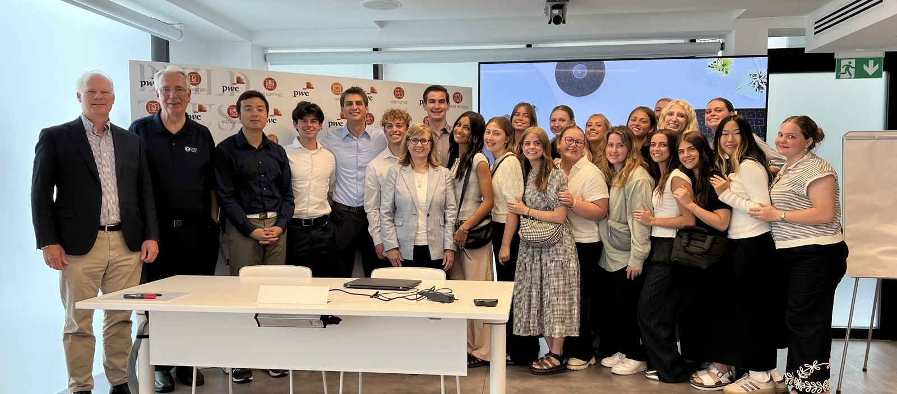

Experience
I've been working since January as a tax accountant at a tax firm in Sandy, Utah called The Accounting Factor. I've spent my time here preparing personal and business tax returns. I've learn a significant amount about how taxes work, a skill that will be useful in life and as I pursue accounting as a career. I've also gained a significant amount of experience in data entry and interpretation andcustomer service.
Before the Accounting Factor, I've had several random jobs all for a short period of time. None of them really helped me or gave me applicable skills, so I won't bore you with them.
School Experience
I've spent 2 years at BYU now. Much of that time has been spent fulfilling the general education credits required of all students. In the business school, I've complete all the business core classes covering: Marketing, Supply Chain Management, Communications, Information Sytems, and Economics. I've also completed the prerequisite classes for the accounting program at BYU, giving me a good base in that field.
Study Abroad

I had the opportunity to do a study abroad in the summer of 2025. I spent time in France, Italy, and England, traveling around and taking classes about business. I also was able to visit with many successful businessmen from companies such as, PWC, CitiGroup, McKinsey, and GE. The experience opened me up to a wider world of business than just what happens in the United States. I piqued my interest in living and working abroad.
Leadership and Service
Possibly the most impactful experience of my live is the 2 year misssion that I served for my church. I went to the Tri-Cities are of Washington, I learned spanish because of the large hispanic population there, and I worked everyday to serve other and bring them peace through Jesus Christ. This experience helped me to be less selfish, work hard despite any other circumstances, and learn valuable virtues like integrity, diligence, and patience.